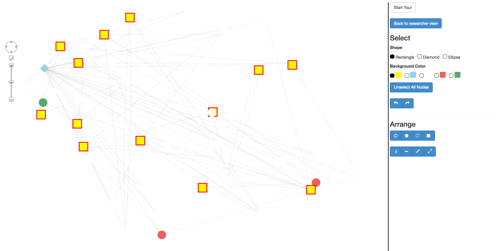
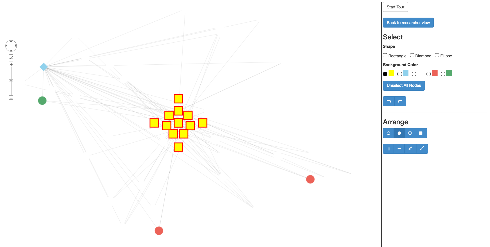

This page should help familiarize you with GraphSpace's interface and basic features.
Terminology
Upload graphs
Interact with graphs
Share graphs
Search graphs
Organize graphs
Programmatically communicate with GraphSpace
Terminology
This section describes GraphSpace concepts and terms that are used throughout the documentation.
Anonymous vs. Registered user
An anonymous user is anyone that is using GraphSpace without being logged in. An anonymous user does not have access to the REST API and may not be a member of a group. They may upload graphs anonymously (See uploading via web interface). Note: Graphs that are uploaded by anonymous users will be deleted after 30 days.
A registered user is anyone that is logged into GraphSpace. By logging into GraphSpace, users have full access to the REST API and are allowed to be members of groups. Graphs uploaded by registered users will remain under a user's account unless they are deleted by the user themselves.
Public vs. Private graphs
When a registered user uploads a graph to GraphSpace either through the REST API call found in the Programmer's Guide or through the web interface, it is by default uploaded as a private graph. A private graph may only be viewed by the owner of the graph (registered user who uploaded the graph). The only way a private graph may be viewed by other registered GraphSpace users is if the private graph is shared with a group. If the owner of the graph is part of a group and shares their private graph with the group, all members of the group may view it as well as create their own layouts for the graph. (See Layouts Panel)
When an anonymous user uploads a graph, it is by default a public graph (See uploading via web interface). A public graph is viewable to any person that visits GraphSpace.
In order to make a private graph uploaded by a registered user of GraphSpace public, it may be done so through the REST API. By making a graph public, it allows all registered users to share their layouts they create for the graph. (See Layouts Panel)
Groups
Note: GraphSpace account required for this featureGroups may be thought of as a collection of GraphSpace users. For example, if there are multiple researchers who are working on the same project, a group may be created containing all of the researchers. Once a GraphSpace user is within a group, they may share any graph which they own with the rest of the group. Only members of the group will be able to see the graph.
A group owner is the creator of the group. They may
- Invite any GraphSpace user that has an account to be a member of their group
- Remove any member from their group
- Unshare any graph that has already been shared by the members of their group
- Share their graphs with a group
- Unshare the graphs that they own from the group
Tags
Tags are used to categorize graphs. For example, if a user is uploading multiple graphs to GraphSpace for a specific paper, a tag would be used to categorize all the graphs related to the paper. On the graphs page, a user can search for graphs that match a tag. A graph may have any amount of tags that the user sees fit. It is advantageous for users to group all graphs they upload using tags as it allows for clear organization of work on GraphSpace. Tags are used to organize graphs for a user of GraphSpace, whereas groups are used to share graphs amongst multiple users of GraphSpace.
Currently, one has to know the exact tag to search for in order to retrieve all graphs that a user has permission to see which match the searched tag. If you are searching for multiple tags, separate each individual tag value with commas. Ex: help, tutorial, guide
All tags associated with a graph must be defined in the metadata for the graph itself. Refer to JSON Reference.
Uploading graphs
GraphSpace provides two methods to upload graphs: Through the REST API call or through the web interface.
Via REST API
This approach allows one to be more flexible and utilize all of the CSS features by specifically referencing them in the JSON for the graph. Please refer to the Programmer's Guide for more information.
Via Web Interface
For users who don't want to use the REST API for uploading a graph, we provide an easy web interface for uploading individual graphs. This interface allows users to upload their graphs directly into their accounts on GraphSpace.
We allow for the upload of two types of files into GraphSpace using this interface: graphs that follow the GraphSpace JSON Reference (.json files) and graphs that are exported directly from Cytoscape 3.1 or later (.cyjs files).
Please follow these instructions to export your Cytoscape graph to .cyjs format.
Note: Files using the .cyjs format may only be uploaded via the web interface!
For users who are not registered on GraphSpace, we provide this upload functionality as a tool to obtain a unique URL that contains the content of any .json/.cyjs file that is uploaded via the web interface.
Note: all graphs that are uploaded for unregistered users of GraphSpace will be deleted after 30 days.
Interact with graphs
Consider the follow public graph:
Embedded Information
Elements (nodes and edges) inside of a graph may have information embedded in them. Upon clicking any element inside of a graph, the element's border color will turn red. If the clicked element contains information (see JSON reference), it will show up as part of a pop up box, otherwise no pop up will be shown. The image below shows the information that is contained inside of the node CCT6.
The information embedded inside elements may contain external links to sources as well.
Graph Panels
When viewing a graph, you'll notice that there are panels to the right of a graph. Some of these panels are hidden. Clicking on an individual panel will reveal information the panels contain.Graph Details Panel: Contains information describing the graph e.g. legend

Searching Panel: Allows user to find nodes/edges that match search terms. See Elements within a graph for more information.

GraphSpace allows users to send links which contain elements being searched for. If a user searches for an element and the element is found inside the graph, a link is generated on top of the search bar. This link provides a reference to this graph with all of the search terms highlighted. If a GraphSpace user sends this link to someone else, they can follow the link to see the current graph (including all searched elements) provided that they are able to access the graph. [See Groups]
Export Panel: Allows one to export the entire image of the as a PNG. The JSON option allows a user to see the exact JSON that was used to render the current graph.

Owner Panel: shows the GraphSpace user whom the graph belongs to

Sharing Panel: Displays all the groups that a graph is shared with. If a user is the owner of a graph, they will also have an option to share this graph with all the groups that they are a member of or the own. [See Groups]

Layouts Panel: Provides multiple methods to display or layout a graph. Note: a user must have an account with GraphSpace in order to save and share layouts they create.
Auto Layouts
Manual Layouts
The 'Auto' option provides methods to automatically layout a graph using their respective algorithms. If a person has created an account and logged into GraphSpace, they they will be allowed to save any changes to the positions of elements in the graph that they manually make. In addition, they will also be able to view layouts and share layouts with groups that they are a member of. [See Groups]
If a user of GraphSpace saves their own layout, they are given the following functionalities for the layout through buttons presented in the following order: (i) a direct link to this layout, (ii) change name of layout, (iii) share this layout with other users who have access to this graph, (iv) delete this layout, and (v) make it the default layout, i.e., instruct GraphSpace to display this layout whenever a user visits the page for this graph.

GraphSpace provides tools for the selection and movement of multiple elements in the graph. In order to do this, click the Use Layout Editor button.

Clicking this button takes a user of GraphSpace to a simplified view of the graph. From here, they may use the tool pallette provided to quickly re-arrange the structure of the graph. The picture below shows the simplified version of the graph seen throguhout this guide. Notice that labels for nodes are no longer shown and different options are provided to the user.

The Start Tour button walks a user through all of the features provided in the tool pallette. The Back to researcher view button gives a user the option to save the current layout and/or go back to the original view of the current graph. The Select section allows a user to choose elements in the graph based on their properties. There are two properties from which a user can select elements: Shape and Color.
The Shape section allows a user to select all nodes that are any of the selected shapes. For example, if a user wanted to select all nodes that are rectangle OR ellipses, they mark ellipse and rectangle under this section.

The Color section allows a user to select all nodes that are any of the selected colors. For example, if a user wanted to select all nodes that are yellow OR green, they mark yellow and green under this section.

If a user wants to select all nodes that are rectangles AND are yellow, they would select rectangles from the Shape section and yellow from the Color section.

A user may click on the Unselect All Nodes button to reset all selections made. There are also Undo and Redo buttons in case a user wants to repeat or undo their actions.
The Arrange section allows a user to arrange all selected nodes into different shapes shown on the buttons. The following picture shows the arrangements of selected nodes that users may construct by clicking the buttons in this section.
Open Circle
Closed Circle

Open Rectangle
Closed Rectangle
Vertical Line
Horizontal Line
Pinch
Expand
Step through filtering Panel: There are graphs in GraphSpace which employ the use of Step through filtering. This concept allows one to see subgraphs of the entire graph. In addition, it allows a user to "step" through the connections of a graph in sequential order. The images below show a user stepping through a graph.


Max highly probable paths tells GraphSpace to display a subgraph up to the specified value.
Number of highly probably paths reveals interactions (connections) that occur at a certain value. For example, when Number of highly probable paths was 10, the red node was revealed, however, when Number of highly probable paths was 8, it was hidden.
Share graphs
Share graphs among members of groups. Sharing graphs with a group gives permission to all members of a group to see the graph.
Sharing graphs with group(s)
There are two ways to share a graph that a user owns: REST API and Sharing Panel.
In order to share a graph, you must own the graph. In addition, you must be a member or the owner of the group you want to share the graph with. Sharing a graph allows all the members in the group to see the graph. Un-sharing a graph means that no one else in the group is allowed to see that graph anymore.Sharing layouts with group(s)
Similar to a graph, a layout may also be shared with a group. In order for a layout to be shared with a group, the graph (and implicitly the graph owner) must already be shared with a group. It would make no sense to share a layout with a group if that graph may not be viewed by any of the group's members.
When you first create a layout, only the creator of the layout is allowed to see it. If the graph is publicly available on GraphSpace, then if the user shares the layout they created, the layout will also be made publicly available. If the graph is privately shared, then if the user decides to share a layout they created, every group that has both the creator of the layout as well as the graph which the layout references will have access to that layout.
See Layout Panel.
Search graphs
The Search panel allows for any user of GraphSpace to search for elements and graphs that matches the criteria of ALL query terms. A user may search for graphs using the name of a graph as well as a node or an edge which a graph may contain.
Semantics
GraphSpace supports the searching of multiple queries. In order to search for multiple terms, simply seperate each search term with a ",". For example: AKT1, AKT3, CTNNB1".
In order to search for an edge, use the following syntax [tail: head] where tail is the name of the source node and the head is the name of the target node.
In order to search for a node, simply enter the node's content. For example: AKT1
Elements within a graph
GraphSpace allows a user to search for a nodes and edges that are inside a graph. If a search term is found in the graph it is highlighted in the graph. Multiple nodes and edges may be searched for within a graph by seperating each node/edge with a ",".
For example, if a user searched for the node 'TEM1', then the node will look like this:
TEM1 before searching
TEM1 after searching
If a user wants to search for edge connection from TEF4 to TEM1, they can do so with the following search command: TEF4:TEM1. The edge will look like this:
Before searching for edge
After searching for edge
The Exact option under the search bar allows one to search for all elements within a graph that are identical to the search term. If there are two terms CDC5 and CDC55 and the user does an exact search with the term 'CDC5', only CDC5 will be highlighted. Note: If the user had searched for the term 'CDC', nothing would have been highlighted since there are no nodes in our example graph which have CDC as their entire value.
Note:If there are mulitple search terms, all elements that are contained within the graph that is being searched on will be highlighted.
Graphs that contain elements
The Similar option under the search bar allows one to search for all graphs that may contain that word in the graph itself. This option will return all the graphs that may have a node which contains parts of the term(s) being searching, graphs that may contain part of the searched term in its name, as well as if there are edges which contain part of the searched term(s).The Exact option under the search bar allows one to search for all graphs that have exactly what is being searched for. Graphs returned from this option may have a node, graph name, or an edge which is identical to the searched term(s).
To search for graphs that match a graph name, simply type the name or a part of the name of the graph
To search for nodes, type the content inside of the node (text that is contained inside of a node)
To search for edges, search using the following syntax [tail: head] where tail is the name of the node where the arrow is coming from and head is the name of the node that the arrow is point to. For example, to search for the edge that connects YEF3 to SIR2, type YEF3:SIR2. All graphs that contain this edge will be presented to the user.
If searching for multiple values, separate all individual search terms with commas. Ex: AKT1, AKT3, JUN
Note:If there are multiple search terms (and/or tag terms), all graphs that are returned WILL match all of these terms. All graphs that are returned by the searches of a node and/or an edge will have all searched terms highlighted inside the graph.
Organize Graphs
To aid the organization of graphs, GraphSpace employs the user of Tags. When searching for graphs, a user may use tags to narrow down the number of graphs shown.
Programmatically communicate with GraphSpace
For registered GraphSpace users that want to write scripts to communicate with GraphSpace, a REST API is provided. This REST API allows access to almost all of the functionality that is provided through the website. An example of when it would be advantageous to use the REST API would be for tasks that involve multiple iterative tasks such as uploading many graphs and/or sharing graphs with groups. Consult the Programmer's Guide for more information.